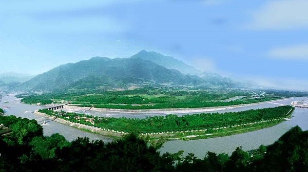

景区简介：
峨眉山（Mount Emei）位于中国四川省乐山市峨眉山市境内，是中国“四大佛教名山”之一，地势陡峭，风景秀丽， 素有“峨眉天下秀”之称，山上的万佛顶最高，海拔3099米，高出峨眉平原2700多米。
峨眉山宗教文化特别是佛教文化构成了峨眉山历史文化的主体，所有的建筑、造像、法器以及礼仪、音乐、绘画 等都展示出宗教文化的浓郁气息。山上多古迹、寺庙，有报国寺、伏虎寺、洗象池、龙门洞、舍身崖、峨眉佛光 等胜迹，是中国著名的旅游、休养、避暑目的地之一。
峨眉山为蚀余山，介于北纬29°16′-29°43′，东经103°10′-103°37′之间，为邛崃山南段余脉，自峨眉平原拔地而起， 山体南北延伸，绵延23公里，面积约154平方公里，主要由大峨山、二峨山、三峨山、四峨山4座山峰组成。 山的中、下部分布着花岗岩、变质岩及石灰岩，山顶部盖有玄武岩。
峨眉山是世界文化与自然双重遗产，山上的古建筑群为全国重点文物保护单位，以峨眉山为主体的峨眉山景区 为国家重点风景名胜区、国家AAAAA级旅游景区。
景区路线：
景区简介：
都江堰是世界文化遗产（2000年被联合国教科文组织列入“世界文化遗产”名录）、世界自然遗产（四川大熊猫栖息地）、 全国重点文物保护单位、国家级风景名胜区、国家AAAAA级旅游景区。
都江堰位于四川省成都市都江堰市城西，坐落在成都平原西部的岷江上，始建于秦昭王末年(约公元前256～前251)，是蜀郡太守李冰父子在前人鳖灵开凿的基础上组织修建的大型水利工程，由分水鱼嘴、飞沙堰、宝瓶口等部分组成，两千多年来一直发挥着防洪灌溉的作用，使成都平原成为水旱从人、沃野千里的"天府之国"，至今灌区已达30余县市、面积近千万亩，是全世界迄今为止，年代最久、 唯一留存、仍在一直使用、以无坝引水为特征的宏大水利工程，凝聚着中国古代汉族劳动人民勤劳、勇敢、智慧的结晶。
都江堰风景区主要有伏龙观、二王庙、安澜索桥、玉垒关、离堆公园、玉垒山公园、玉女峰、灵岩寺、普照寺、翠月湖、都江堰水利工程等。
景区路线：
景区简介：
九寨沟，世界自然遗产，国家重点风景名胜区，国家AAAAA级旅游景区，国家级自然保护区。
九寨沟位于四川省阿坝藏族羌族自治州九寨沟县境内，是中国第一个以保护自然风景为主要目的的自然保护区。地处青藏高原向四川盆地过渡地带，距离成都市400多千米，是一条纵深50余千米的山沟谷地，总面积64297公顷， 森林覆盖率超过80%。因沟内有树正寨、荷叶寨、则查洼寨等九个藏族村寨坐落在这片高山湖泊群中而得名。
九寨沟国家级自然保护区主要保护对象是以大熊猫、金丝猴等珍稀动物及其自然生态环境。有74种国家保护珍稀植物，有18种国家保护动物，还有丰富的古生物化石、古冰川地貌。
“九寨归来不看水”，是对九寨沟景色真实的诠释。泉、瀑、河、滩108个海子，构成一个个五彩斑斓的瑶池玉盆。长海、剑岩、诺日朗、树正、扎如、黑海六大景观，呈“Y”字形分布。翠海、叠瀑、彩林、雪峰、藏情、蓝冰，被称为“六绝”。神奇的九寨，被世人誉为“童话世界”，号称“水景之王”。